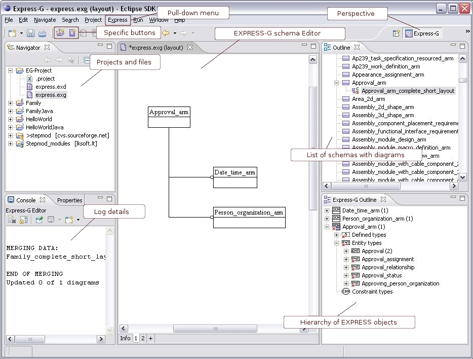

EXPRESS-G Perspective
The
EXPRESS-G perspective
presents needful viewers and editors to make the work with
Graphical EXPRESS Editor
more convenient (see
Figure 1
):
Navigator
panel- the list of files, presented in the selected workspace.
Console
panel- the application log details.
Express-G schema Editor
panel - the graphical layout of the selected schema.
Outline
panel - the list of schemas with schema diagrams situated beneath.
Express-G Outline
panel - the hierarchy of EXPRESS objects of the selected schema layout in the
Outline view
.

Figure 1.
Workbench view, EXPRESS-G perspective.
To top
Copyright © 2005-2008
LKSoftWare GmbH
. All Rights Reserved.
JSDAI is a registered trade mark of LKSoftWare GmbH.